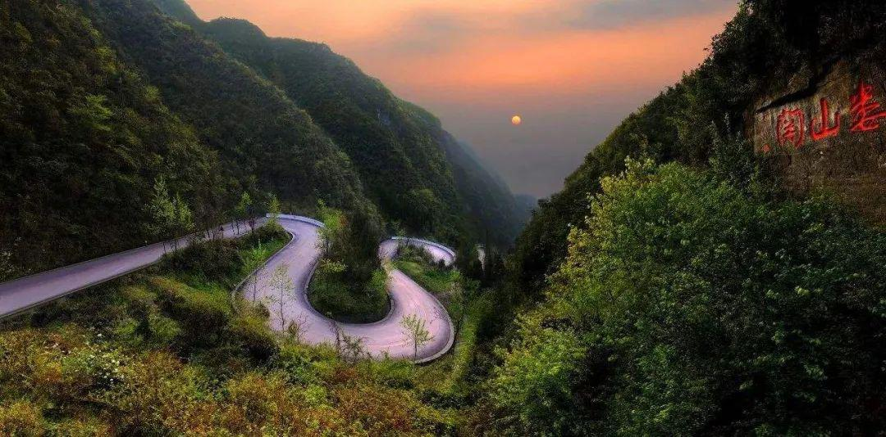

遵义旅游区是大西南旅游的重要组成部分，是川渝黔金三角旅游区的重点景区，也是长江三峡国际旅游热点中生态旅游的理想之地。初步统计，遵义市共有自然生态，人文景观和社会资源3个大类、40个品种、100多个景区(点)，其中，有国家级资源14处、省级资源75处。遵义山川秀丽，风光独特，尤以山、水、林、洞为主要特色。
截至2016年，遵义市有世界自然遗产1个（赤水丹霞）；国家级风景名胜区1个（赤水风景名胜区）、省级6个（习水、娄山关、绥阳宽阔水、仁怀茅台、余庆大乌江、湄潭湄江）；国家级自然保护区3个（赤水桫椤国家级自然保护区、长江上游珍稀特有鱼类国家级自然保护区、习水中亚热带常绿阔叶林国家级自然保护区）；国家森林公园4个（九道水国家森林公园、竹海国家森林公园、燕子岩国家森林公园、凤凰山国家森林公园）、省级4个（习水飞鸽、中国杉王、遵义娄山关、大板水）；国家级地质公园1个（双河溶洞国家地质公园）；国家AAAA级旅游景区21个（遵义会议会址旅游景区、赤水大瀑布景区、燕子岩国家森林公园、水上大天门旅游景区、四渡赤水纪念馆、中国丹霞谷旅游风景区、汇川区娄山关景区、湄潭天下第一壶茶文化旅游景区、赤水竹海旅游景区、余庆飞龙寨景区、赤水市佛光岩景区、凤冈茶海之心景区、仁怀市中国酒文化城、湄潭茶海生态园景区、务川仡佬文化旅游景区、赤水四洞沟旅游景区、绥阳双河洞旅游景区、仁怀茅台酒镇、桐梓杉坪旅游景区、汇川海龙屯旅游景区、绥阳红果树旅游景区）。
